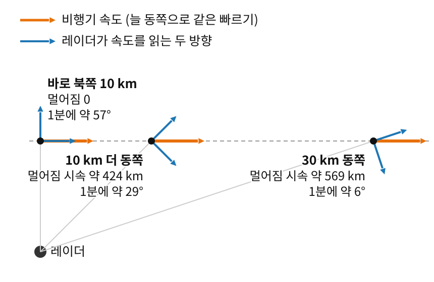
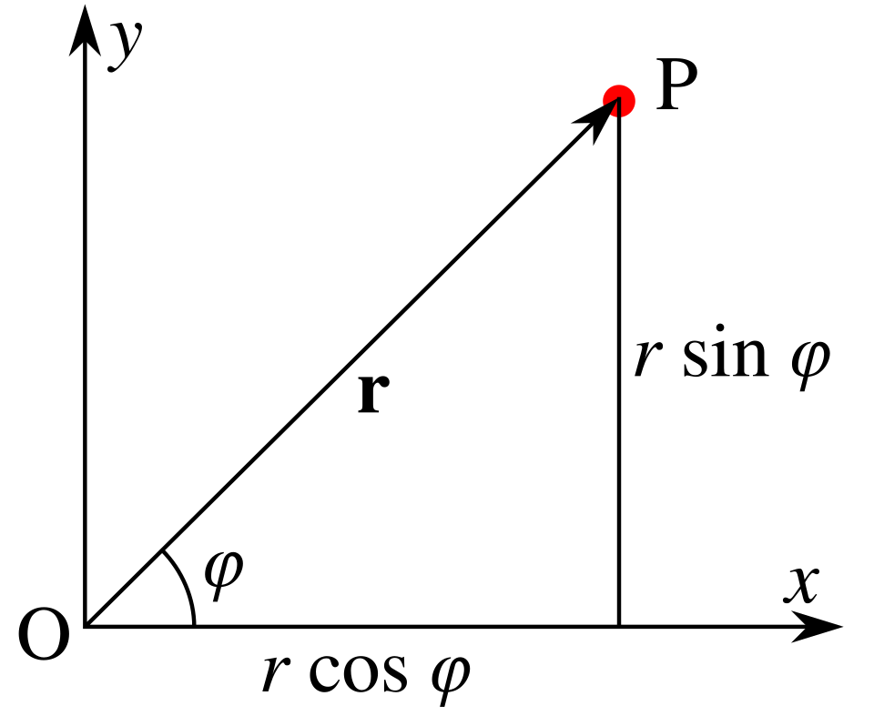
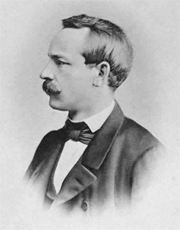
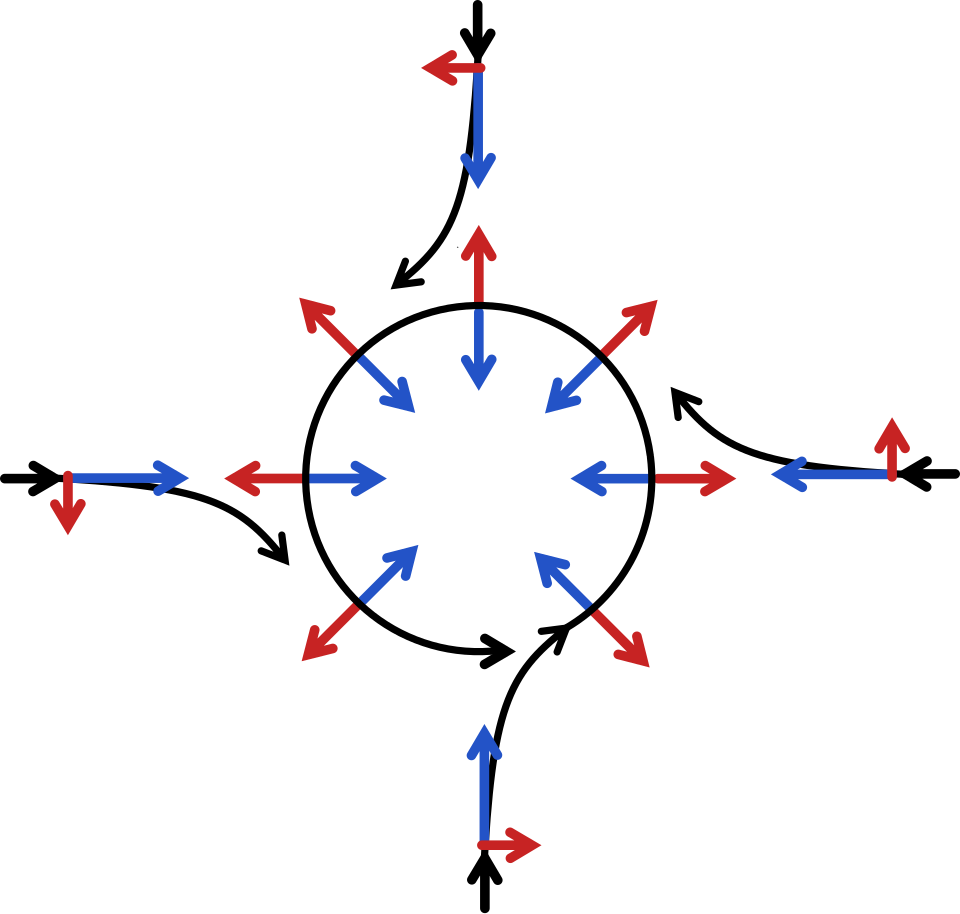

관제탑의 레이더 화면을 떠올려 보자. 레이더는 비행기의 위치를 "레이더에서 몇 km, 방위각 몇 도"로 읽고, 속도도 "레이더에서 멀어지는 빠르기"와 “방위각이 도는 빠르기” 두 숫자로 읽는다. 지금 비행기 한 대가 레이더 바로 북쪽 10km 지점을 지나 동쪽으로 시속 600km, 곧게 같은 빠르기로 날고 있다. 비행기는 가속하지 않는다.
그런데 레이더의 숫자는 가만히 있지 않는다. 바로 북쪽을 지나는 순간 멀어지는 빠르기는 0이고 방위각은 1분에 약 57도씩 돈다. 동쪽으로 10km 더 가면 멀어지는 빠르기는 시속 약 424km로 늘고 방위각은 1분에 약 29도로 느려진다. 30km 지점에서는 시속 약 569km, 1분에 약 6도다. 숫자만 보는 계산기는 "속도가 변했다, 비행기가 가속하고 있다"고 결론 내린다.

레이더가 본 비행기 세 자리. 비행기의 속도(주황)는 세 자리 모두 동쪽으로 같은 빠르기인데, 레이더가 속도를 읽는 두 방향(파랑: 레이더에서 멀어지는 방향, 방위각이 도는 방향)은 자리마다 돌아가 있다
기계학습에서도 같은 일이 생긴다. 구면이나 쌍곡 공간처럼 휘어진 공간 위에 매개변수를 묶어 두고 학습하면, 그래디언트(가장 가파른 방향의 벡터)나 모멘텀 같은 벡터를 그 공간의 좌표 성분으로 들고 다닌다. 좌표 숫자가 변한 것만 보고 "벡터가 이만큼 변했다"고 계산하면, 좌표 격자가 휘어서 생긴 숫자 변화까지 학습 신호로 착각할 수 있다.
숫자의 변화 가운데 얼마만큼이 진짜 변화이고, 얼마만큼이 좌표 탓일까? 둘을 가려낼 방법이 있을까?
공변미분: 기저가 변한 몫을 빼는 미분
레이더 숫자가 왜 변했는지 평면의 극좌표 (r,θ)로 따져 보자.

극좌표의 기저벡터 r^과 θ^ — 위치에 따라 방향이 변한다
기저벡터 r^과 θ^를 떠올려 보라. r^은 원점에서 바깥으로 향하는 방향이고, θ^는 원을 따라 도는 방향이다. 문제는 이 기저벡터들이 장소마다 방향이 변한다는 것이다. (r,0)에서의 r^과 (r,π/2)에서의 r^은 전혀 다른 방향을 가리킨다. 이제 상수 벡터장 — 예를 들어 "어디서나 동쪽으로 1"인 벡터장 — 을 극좌표로 표현하면 어떻게 되는가?
숫자로 확인해 보자. 극좌표 (r,θ)=(1,0)에 서서 θ 다이얼(좌표 하나를 돌리는 손잡이)을 0.1 돌린다. 길이 1짜리 기저 (r^,θ^)로 적은 동쪽 화살표의 성분은 (1,0)에서 (cos0.1,−sin0.1)=(0.995,−0.0998)로 바뀐다. 화살표는 여전히 동쪽이다. 바뀐 것은 기저뿐이다. r^과 θ^가 함께 0.1 rad(라디안) 돌았고, 같은 화살표를 돌아간 기저로 읽으니 숫자가 달라졌다.
편미분은 이 성분 변화를 다이얼 0.1로 나눈 값, (−0.05,−0.998)을 내놓는다. 다이얼을 더 작게 돌리면 (0,−1)에 다가간다. 이 값은 전부 기저가 돈 몫이다.
어느 자리에서나 같은 계산을 할 수 있다. 직교좌표에서 W=x^인 이 벡터장은 극좌표에서 W=cosθr^−sinθθ^가 된다(여기서는 길이 1짜리 기저로 적었다. 뒤에 쓰는 좌표 기저와는 길이가 다르다). 성분이 θ에 의존한다!
이 벡터장을 θ에 대해 편미분하면 ∂Wr/∂θ=−sinθ, ∂Wθ/∂θ=−cosθ가 나온다(θ=0에서는 방금 숫자로 본 (0,−1)이다). 0이 아니다. 하지만 이 벡터장은 원래 상수이다 — 물리적으로 전혀 변하지 않는 벡터장이다. 변하는 것은 벡터장이 아니라 좌표계의 기저벡터다. 편미분이 잡아낸 것은 벡터장의 진짜 변화가 아니라, 좌표 격자 자체가 돌아가면서 생긴 가짜 변화다. 레이더 숫자도 똑같다. 비행기의 속도는 내내 "동쪽으로 시속 600km"인데, 레이더가 속도를 읽는 두 방향(멀어지는 방향, 도는 방향)이 비행기를 따라 돌아가니 숫자가 변한 것이다.
계산을 직접 해보면 더 선명해진다. 극좌표에서 r^=cosθx^+sinθy^이므로, ∂r^/∂θ=−sinθx^+cosθy^=θ^이다. 기저벡터 자체가 θ에 대한 미분이 0이 아니다!
이 함정은 극좌표뿐 아니라, 구면좌표, 원기둥좌표, 그리고 일반적인 곡선좌표 어디서든 나타난다. 곡면 위에서는 더 심각하다. 구면에는 평면의 직교좌표처럼 어느 동네에서나 격자가 곧게 뻗은 좌표계가 아예 없으므로, 어떤 좌표를 고르든 편미분에는 좌표 탓에 생긴 가짜 변화가 섞여 들어온다.
극좌표에서 "어디서나 동쪽으로 1"인 벡터장을 편미분했더니 0이 아닌 값이 나왔다. 그 가짜 변화가 기저벡터가 도는 데서 왔다면, 기저가 변한 몫을 계산해서 빼 주면 되지 않을까?
역사: 엘빈 브루노 크리스토펠 (Elwin Bruno Christoffel, 1829–1900)

리만이 곡면 위의 기하학이라는 거대한 비전을 제시했을 때, 그것을 실제로 계산 가능한 도구로 만든 사람은 크리스토펠이었다.
리만의 1854년 강연은 그가 세상을 떠난 뒤인 1868년에야 인쇄되어 나왔다. 이듬해인 1869년, 크리스토펠은 논문 「2차 동차 미분식의 변환에 관하여」에서 이런 물음을 다뤘다: 거리를 재는 공식(계량, 점마다 거리를 재는 자 g) 두 개가 주어졌을 때, 좌표만 바꿔서 한쪽을 다른 쪽으로 옮길 수 있는가? 곧 두 공식은 사실 같은 공간을 다른 좌표로 적은 것인가? 좌표를 바꾸면 성분은 모두 바뀌므로, 이 물음에 답하려면 좌표 탓에 달라지는 몫을 따로 다룰 방법이 있어야 했다. 이 물음을 푸는 과정에서 그는 계량의 편미분으로 계산되는 보정 계수와, 뒤에 공변미분이라 불리게 될 미분 방법을 도입했다. 이 계수에는 뒤에 그의 이름이 붙는다.
기저가 돈 몫 되돌리기
앞의 숫자에서 편미분이 내놓은 값은 전부 기저가 돈 몫이었다. 그러니 기저가 돈 몫을 따로 계산해 되돌려 주면 0이 남는다. 이 뺄셈을 모든 방향, 모든 좌표에 대해 한 식으로 적어 보자. 벡터장 W=Wi∂i(같은 첨자가 위아래로 한 번씩 나오면 모두 더한다)를 방향 v=vj∂j로 미분한다고 하자. 성분만 편미분하면 다음과 같다.
여기에는 기저벡터 ∂i 자체가 위치에 따라 도는 몫이 빠져 있다. 그래서 기저벡터 하나를 다른 기저 방향으로 미분한 결과를 다시 기저벡터들로 풀어 쓴다. 그 계수 Γ(감마)를 크리스토펠 기호라 부른다(좌표 보정값. 기저가 옮겨 가며 얼마나 도는지 적은 수). 아래 식의 역삼각형 기호 ∇(나블라)는 ML에서 그래디언트를 적는 기호와 모양만 같고, 여기서는 아래첨자에 적힌 방향으로 하는 보정된 미분을 뜻한다.
비유를 하나 들어 보자. 기차 안에서 테이블 위의 커피잔을 관찰하고 있다고 하자. 기차가 커브를 돌 때 커피잔이 미끄러진다. 이것은 커피잔의 "진짜 움직임"인가? 기차 밖에서 보면 커피잔은 관성에 의해 직선 운동을 하고 있을 뿐이고, 움직인 것은 기차(좌표계)이다. 기차의 가속을 보정해야 커피잔의 진짜 운동을 볼 수 있다. 물리학에서 "관성력"이라 부르는 것이 바로 이 좌표 탓 가짜 변화이고, 크리스토펠 기호가 하는 역할이 정확히 이것이다. 도는 지구에 붙은 좌표로 본 바람도 같다. 기상학은 바람이 휘어 보이는 몫을 코리올리 힘이라는 겉보기 힘으로 적는다.

북반구 저기압 둘레의 바람. 파랑은 기압 차가 공기를 미는 방향, 빨강은 도는 지구 위에서 보이는 겉보기 힘(코리올리 힘), 검정은 휘어 들어가는 바람의 길이다. 코리올리 힘은 도는 좌표로 보았기 때문에 생기는 "가짜 변화"이고, 이런 몫을 보정하는 것이 공변미분의 핵심이다
정리하면, 성분의 편미분은 벡터장의 진짜 변화와 기저가 돈 몫을 함께 잡는다. 직교좌표는 기저가 어디서나 같으니 Γ=0이고, 극좌표는 기저가 도니 Γ=0이다. Γ 항을 더하면 기저가 돈 몫이 지워져, 어느 좌표로 계산해도 같은 결과가 남는다. 이 보정된 미분에 이름을 붙이자.
공변미분 (보정된 미분 / Covariant Derivative, ∇vW) — 벡터장 W를 방향 v로 미분하되 좌표 탓 가짜 변화를 보정한 것. “기차의 가속을 빼고 커피잔의 진짜 움직임만 본다.”
같은 보정은 물리에서도 나온다. 일반상대성이론에서 중력을 수식으로 나타낼 때, 크리스토펠 기호는 "좌표계의 가속"과 "진짜 중력"이 뒤섞인 형태로 나타난다. 아인슈타인의 등가 원리 — 중력과 가속이 국소적으로(아주 좁은 한 곳 안에서는) 구분 불가능하다는 것 — 의 수학적 표현이 바로 여기에 있다.
따라 계산해 보기 — 기저벡터를 미분해서 Γ 구하기
평면에서는 좌표 기저를 직교좌표 성분으로 적어 그냥 미분하면 기저가 얼마나 도는지 바로 보인다. ∂r=(cosθ,sinθ), ∂θ=(−rsinθ,rcosθ)이다. ∂θ를 θ로 미분하면 (−rcosθ,−rsinθ)=−r∂r로 원의 안쪽을 향하고, r로 미분하면 (−sinθ,cosθ)=r1∂θ로 원 둘레 방향의 기저가 바깥으로 갈수록 길어지는 몫이 나온다. 따라서 Γθθr=−r, Γrθθ=Γθrθ=1/r이고(∂r를 θ로 미분해도 r1∂θ가 나온다), 나머지는 모두 0이다.
이제 절 첫머리의 "어디서나 동쪽으로 1"인 벡터장을 다시 보자. 좌표 기저 ∂r,∂θ로 쓰면 성분은 Wr=cosθ, Wθ=−sinθ/r이다(절 첫머리에서는 길이 1짜리 θ^를 써서 −sinθ였고, ∂θ=rθ^이므로 r로 나눈다). θ 방향 공변미분을 계산하면 편미분과 보정 항이 정확히 상쇄된다.
r 방향 공변미분도 같은 식으로 0이 된다. 편미분이 잡았던 −sinθ와 −cosθ는 벡터장의 변화가 아니라, 기저가 돌아간 몫이었다.
아래 도구에서 극좌표 평면 위의 세 벡터장을 비교해 보자. 점 P를 끌면, 성분의 편미분과 Γ 보정 항과 그 합(공변미분)이 막대로 나온다. 동쪽 균일 흐름에서는 두 막대가 언제나 상쇄되어 합이 0이다. 거꾸로 회전 흐름 W=∂θ는 성분이 어디서나 (0,1)이라 편미분은 0인데, 공변미분은 0이 아니다. 화살표가 실제로 돌고 있기 때문이다. 편미분은 가짜 변화를 만들어 내기도 하고, 진짜 변화를 놓치기도 한다.
보정 계수 Γ 자체는 같은 평면에서도 좌표에 따라 달라진다. 직교좌표에서는 Γ가 모두 0이고, 극좌표에서는 Γθθr=−r처럼 0이 아닌 값이 나온다(앞의 따라 계산해 보기에서 구했다). 좌표를 바꿀 때 성분이 정해진 규칙대로만 바뀌는 양을 텐서라 부르는데(PyTorch의 tensor(다차원 배열)와 이름만 같다), Γ가 그런 양인지는 문제 2에서 따져 본다.
ML에서: 구면 위 합성곱 신경망
구면 위의 기상 자료나 3차원 물체 표면처럼 곡면 위에 놓인 데이터에 합성곱 신경망을 쓰려면, 이웃한 점들의 특징 벡터를 모아 더해야 한다. 그런데 곡면 위에서는 점마다 기저 방향이 달라서, 이웃 점의 벡터 성분을 그대로 더하면 방금 본 가짜 변화가 섞인다. 코언(T. Cohen)·와일러(M. Weiler) 등은 2019년 ICML 논문 Gauge Equivariant Convolutional Networks and the Icosahedral CNN에서, 이웃 점의 특징을 더하기 전에 기저가 돈 몫을 보정해 한 점의 기저로 옮겨 오는 합성곱을 만들었다. 여기서 움직이는 것은 데이터 위의 특징 벡터이고, 보정은 "어느 좌표로 적었든 같은 결과"를 보장한다.
문제 1 — 레이더 숫자로 비행기 속력 되살리기
확인 출발 문제의 비행기(레이더 바로 북쪽 10 km 지점을 지나 동쪽으로 시속 600 km)가 그 지점에서 동쪽으로 20 km 간 곳에 있다. (가) 레이더가 읽는 두 숫자, 멀어지는 빠르기(시속 몇 km)와 방위각이 도는 빠르기(1분에 몇 도)를 구하라. (나) 이 두 숫자만으로 비행기의 속력을 되살려 시속 600 km가 맞는지 확인하라.
위 도구의 「문제 1 불러오기」를 누르면 점 P가 이 자리로 간다(거리 10 km를 1로 줄였다). 동쪽 균일 흐름의 성분은 속력을 1로 줄인 값이다.
같이 풀기 세션 1
김민준
레이더까지 거리는 202+102≈22.36 km예요. 멀어지는 빠르기는 600×20/22.36≈ 시속 536.7 km, 방위각은 한 시간에 600×10/500=12 rad, 1분에 약 11.5도요. (나)는 두 숫자를 제곱해서 더하면 536.72+11.52≈536.8이니까… 600에서 537로 줄었어요. 비행기가 감속하고 있는데요?
선생님
비행기는 가속도 감속도 하지 않는다고 했죠. 제곱해서 더한 두 숫자, 단위가 같나요?
김민준
앞은 시속 km이고 뒤는 1분에 몇 도… 달라요. 단위가 다른 걸 그냥 더했네요.
선생님
서연 학생, 방위각이 도는 빠르기를 시속 km로 바꾸려면 무엇이 더 있어야 할까요?
이서연
레이더에서 얼마나 떨어져 있는지요. 같은 각도를 돌아도 멀리 있으면 더 많이 움직이니까요. 한 시간에 12 rad에 거리 22.36 km를 곱하면 시속 268.3 km예요. 그러면 536.72+268.32=600. 딱 600이네요.
선생님
도는 빠르기를 속도로 읽으려면 그 자리에서 각도 1만큼 돌 때 움직이는 거리를 곱해야 해요. 그 길이가 레이더에서 멀어질수록 커지고요.
김민준
도구에서 불러와 보니 Wr=0.89예요. 536.7÷600이랑 같아요. 과제에서 초 단위 시간이랑 밀리초 단위 시간을 그냥 더해서 그래프가 이상하게 나왔던 적이 있는데, 그거랑 같은 실수였어요.
문제 2 — 직교좌표에선 0, 극좌표에선 −r
확인 평면의 직교좌표 (x,y)에서는 모든 Γjki가 0이다. 그런데 앞의 계산에서 극좌표로는 Γθθr=−r이었다. 둘 중 하나가 계산 실수인가? Γ가 텐서라면 어떻게 되어야 하는가?
같이 풀기 세션 2
선생님
직교좌표에서는 Γ가 전부 0이고, 극좌표에서는 −r이 나왔어요. 둘 중 하나가 틀렸을까요?
김민준
극좌표 쪽이 틀린 것 같아요. Γ도 첨자가 셋 달린 텐서잖아요. 텐서는 한 좌표계에서 0이면 모든 좌표계에서 0이라고 배웠으니까, 극좌표에서도 0이어야죠.
이서연
텐서라면 그렇지. 그런데 극좌표 쪽은 방금 그림으로도 확인했잖아. ∂θ를 θ로 미분하니까 정말 원 안쪽을 향했어.
선생님
그럼 두 계산이 다 맞다고 해 봅시다. 민준 학생의 전제 가운데 어디를 의심해야 할까요?
김민준
…Γ가 텐서라는 거요? 첨자가 달렸다고 다 텐서는 아닌가 보네요.
선생님
맞아요. 좌표를 바꿀 때 Γ는 텐서의 변환 규칙에 좌표 변환의 2차 미분이 들어간 항이 하나 더 붙어요. 직교좌표에서 극좌표로 가는 변환은 휘어 있어서 그 항이 0이 아니고, 그게 바로 −r을 만들어요. 그래서 Γ는 텐서가 아니고, 그 덕분에 편미분의 가짜 변화를 지울 수 있는 거예요. 둘 다 계산 실수가 아니에요.
김민준
PyTorch에서는 다 torch.Tensor라고 부르니까 헷갈렸나 봐요. 과제에서 이미지 배열이랑 가중치 배열을 모양이 같다고 그냥 더했다가, 조교님이 "모양이 같다고 같은 물건은 아니다"라고 써 주셨던 게 딱 이거네요.
문제 3 — 이웃 특징을 더하기 전에
계산 곡면 위 합성곱의 사정을 평면의 극좌표로 흉내 내 보자. 원점에서 같은 거리에 있는 두 점 A(θ=0)와 B(θ=60°)의 바람을 합성곱 한 층이 평균 낸다. 점마다 특징 벡터를 그 자리의 길이 1짜리 기저(바깥쪽 r^, 도는 쪽 θ^)로 적는다. 두 점의 실제 바람은 모두 "동쪽으로 1"이라서, A에서 적은 성분은 (1,0), B에서 적은 성분은 (0.5,−0.866)이다. (가) 두 성분을 그대로 평균해 A의 기저로 읽으면 어느 쪽으로 얼마만 한 바람인가? (나) B의 성분을 A의 기저로 옮겨 적은 뒤 평균하면?
같이 풀기 세션 3
김민준
(가)는 평균이 (0.75,−0.433)이에요. A에서 r^은 동쪽, θ^는 북쪽이니까 동쪽으로 0.75, 남쪽으로 0.433. 길이 0.866에 남쪽으로 30° 기운 바람이네요.
이서연
두 점 다 동쪽으로 1인데 평균이 남쪽으로 기울고 약해졌어. 이상하다.
선생님
그럼 (나)로 가 봐요. B의 기저는 A의 기저에서 얼마나 돌아가 있죠?
김민준
60°요. 그러니까 B의 성분을 −60° 돌리면 (−0.5,−0.866)이 나와요. 평균은 (0.25,−0.433), 길이 0.5. 더 나빠졌는데요?
선생님
돌리는 방향을 확인해 볼까요. B의 r^을 A의 기저로 적으면 어떻게 돼요?
김민준
(cos60°,sin60°)=(0.5,0.866)이요. B의 기저가 A에서 시계 반대 방향으로 60° 돌아가 있으니까, B에서 적은 성분은 시계 반대 방향으로 60° 돌려야 A에서 읽혀요. 그러면 (1,0). 평균도 (1,0), 동쪽으로 1이에요.
이서연
성분을 그대로 더하면 기저가 돈 몫이 가짜 바람으로 섞이는 거네. 공변미분에서 기저가 돈 몫을 되돌렸던 것처럼, 이웃 특징도 더하기 전에 되돌려야 해.
김민준
아까 레이더 문제랑 같네요. 레이더가 속도를 읽는 방향이 비행기를 따라 돌았던 것처럼, 점마다 기저가 달라서 같은 바람이 다른 숫자로 적혔어요.